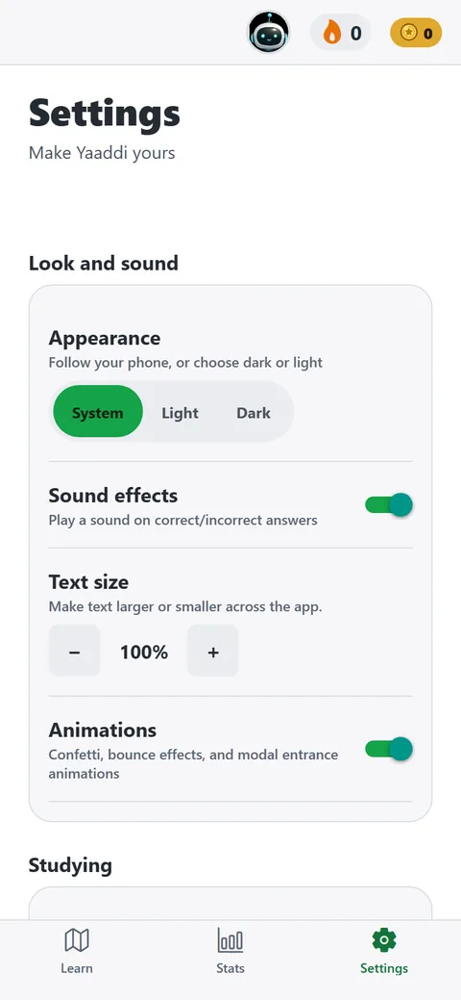

How to change dark mode, text size and sounds in Yaaddi
Short answerOpen the Settings tab. Under Look and sound, choose System, Light or Dark for Appearance, use the minus and plus buttons for Text size, and switch Sound effects and Animations on or off.
Steps
Open the Settings tab.

Under Appearance, choose System to follow your phone, or Light or Dark.
Under Text size, tap the minus or plus button to make text smaller or larger across the app. 100% is the default.
Switch Sound effects on or off to play or mute the sound on correct and incorrect answers.
Switch Animations off to turn off confetti, bounce effects and modal entrance animations.
Good to know
- In language courses, Read cards aloud reads the language being taught automatically when a card appears. The voice is your phone's own text-to-speech engine.
- App language follows your phone. To change it, tap Open phone settings and choose Language for Yaaddi.
Common questions
Does Yaaddi have a dark mode?
Yes. Choose Dark under Appearance, or leave it on System so it follows your phone.